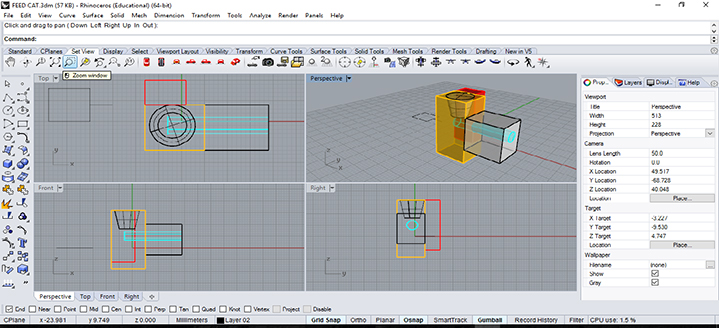

WEEK 2 (01 February 2017)
[Computer - Aided Design]
The second assignment for the FabAcademy was about a computer aided design software, here I start thinking about my final project: Automated Cat Feeder, using different tools and environments, like Autodesk CAD 2D and Ilustrator, for 3D drawing Solidworks and i also explored Rhino, these were my first steps with Rhinoceros, looking for geometric generative possibilities and iterations to draw my final project.
In this class session we have started to sketch the cat feeder.
Sketches:

Project Studies in 2D Autocad:
These are my final project studies in 2D , these drawings were made in autocad
These are the profiles of my final project applied, these drawings was made in autocad.
First Steps With Rhino:
Is the first time I'm drawing with Rhino and I'm really liking it, it's very similar to Cad, I've been reading tutorials and even this is going well, I started by creating simple shapes, trying to adapt it to my idea.

Project Studies in 2D Ilustrator:
I used Ilustrator to draw the written parts of my project, which i want to build in acrylic, and i also drew de logo of the final project.
3D (Render) of my Final Project :
These are my final project 3D Renders, these drawings were made in KeyShot. It was the first time I used KeyShot to render, it's very easy and very similar to Artlantis, which is another program that I use to render.
3D Animation of the Final Project:
It was the first time I did an animation with Rhino, and it was quite easy with 7 quick steps, I made a video in Rhino:
- Control Point Curve;
- Create a Single Point;
- Make some Points On;
- Lock Object;
- Make a Set Up Path Animation;
- Choose 180 frames;
- Press Play;